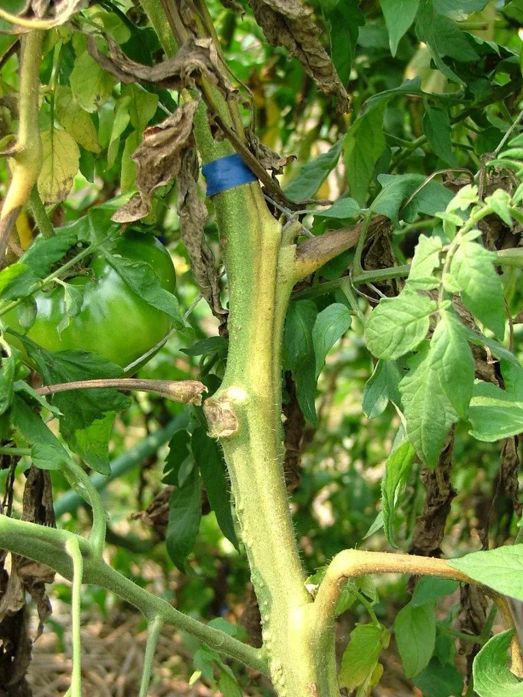

真菌 · 真菌界
尖孢镰刀菌 Fusarium oxysporum

寄主范围极广的植物病原真菌，可侵染香蕉、番茄、棉花等上百种作物，引起枯萎病，是农业上著名的土传病害菌。
- 分类
- 门子囊菌门纲粪壳菌纲目肉座菌目科丛赤壳科属镰刀菌属
- 栖息环境
- 土壤和植物根际，通过根部侵染寄主，可在土壤中多年存活
- 地理分布
- 全球农业区广泛分布，中国各地均有发生
- 保护级别
- 暂无评估（植物病原菌，非保护对象）
物种志
尖孢镰刀菌是子囊菌门肉座菌目的植物病原真菌，菌丝无色或淡粉色，在培养基上形成白色至粉红色的菌落。它产生镰刀形的大分生孢子和椭圆形的小分生孢子，还能形成厚垣孢子，在土壤中长期存活，是典型的土传病原菌。
尖孢镰刀菌的寄主范围极广，可侵染香蕉、番茄、棉花、西瓜、黄瓜等上百种植物，不同专化型分别引起各自的枯萎病。病菌从根部侵入，堵塞维管束，导致植株叶片黄化、萎蔫甚至死亡，严重时大片田园绝收。由于病菌在土壤中可存活多年，防治以选用抗病品种、轮作、嫁接和土壤消毒为主。香蕉枯萎病（巴拿马病）就是由该菌引起的著名案例，病菌也能通过带菌种苗和农具传播。
形态与习性
- 分类子囊菌门肉座菌目丛赤壳科镰刀菌属
- 菌落白色至粉红色
- 孢子镰刀形大分生孢子和厚垣孢子，可在土壤中长期存活
- 寄主香蕉、番茄、棉花、西瓜、黄瓜等上百种植物
- 病害枯萎病，导致维管束堵塞、叶片萎蔫
- 防控抗病品种、轮作、嫁接和土壤消毒
趣味知识
- 尖孢镰刀菌是典型的土传病原菌，厚垣孢子可在土壤中存活多年。
- 它引起的香蕉枯萎病又称巴拿马病，曾摧毁大片香蕉园。
- 病菌从根部侵入并堵塞维管束，导致整株植物萎蔫死亡。